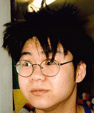

Profile: Born in a north western village just outside the Himalayan Mountains called Photonrah, he was mentally enhanced by a process called mild synoptic DNA reconstruction. He now has the ability to think at degrees no matter what the condition. Since birth he has excelled in spewing rubbish, giving mankind a new era of spew talk now considered to be the international standard of speaking. He has in his time pioneered the first ever hydro-spectacles designed to withstand the wear and tear associated with today's diminishing environment. He also founded the anti-neurotic smile centre where people with strange smiles can trained to become masters a smile disguise. However after his tragic accident in the laboratories, he became delusional and spent the next 10 years eating squid and drinking milk. He was picked up in 1999 by the founder of the Horsonian Society dedicated to preserving the image of the horse and spent 2 years in an intensive recovery cryo stasis and now he spends his time philosophizing for the Horsonian Society at venues across the universe.